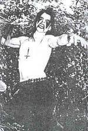

De música eu gosto muito de rock, metal, eletrônica,e um pouco de rap, hip-hop e trap
Metal mais especificamente de black metal, death metal, thrash metal, speed metal,DSBM, e metal alternativo. Bandas como Bathory, Grausamkeit , Decalius, Lorna Shore, Venom, Deftones, Type O Negative e entre outras.
Já de rock eu gosto muito de grunge e shoegaze, bandas como Pearl Jam, Nirvana, quannnic, Narrow Head entre outras..
Por fim eletrônica, Feu costumava gostar de summer eltrohits e edm mas enjoei, hoje em dia gosto muito de synthwave, bandas como Mr. Kitty, trevor something, Mareux, Crystal Castles entre outras.
rap, hip-hop e trap, não vou adentrar muito porquê não é bem meu gosto, sematary, yeat, ghostmane entre outros.
